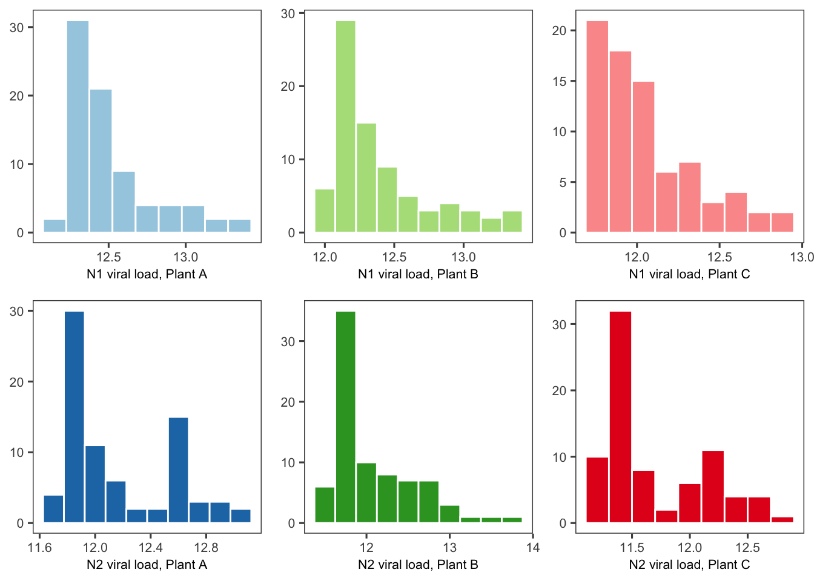
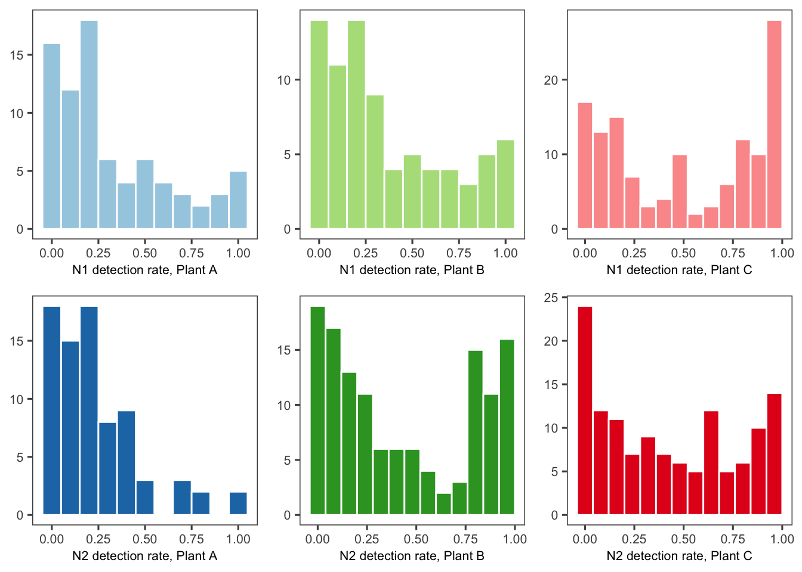
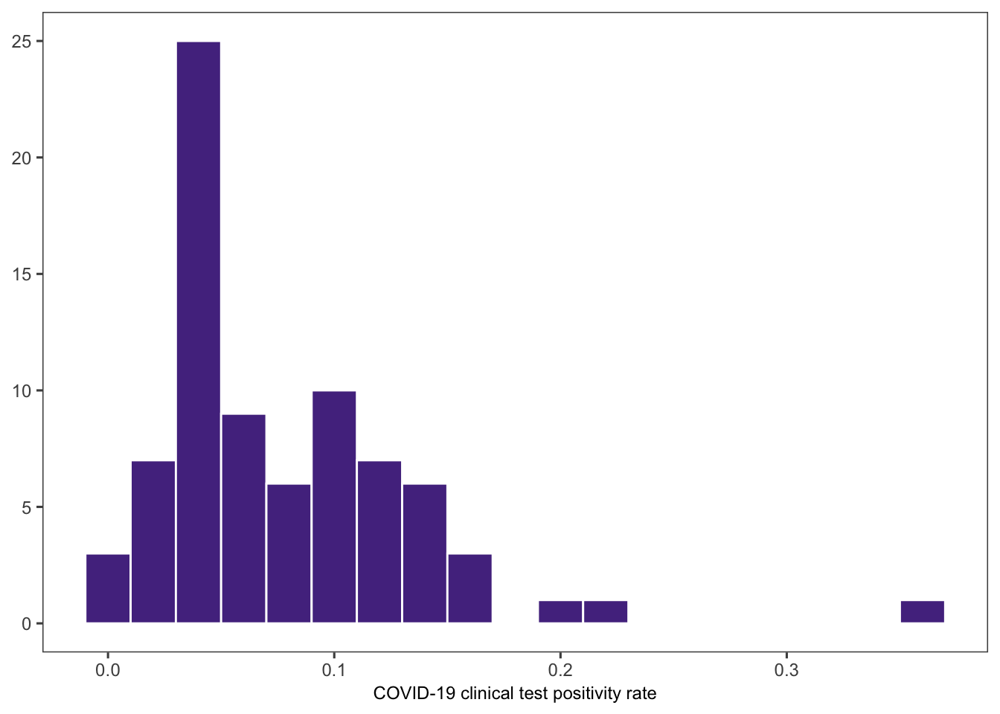
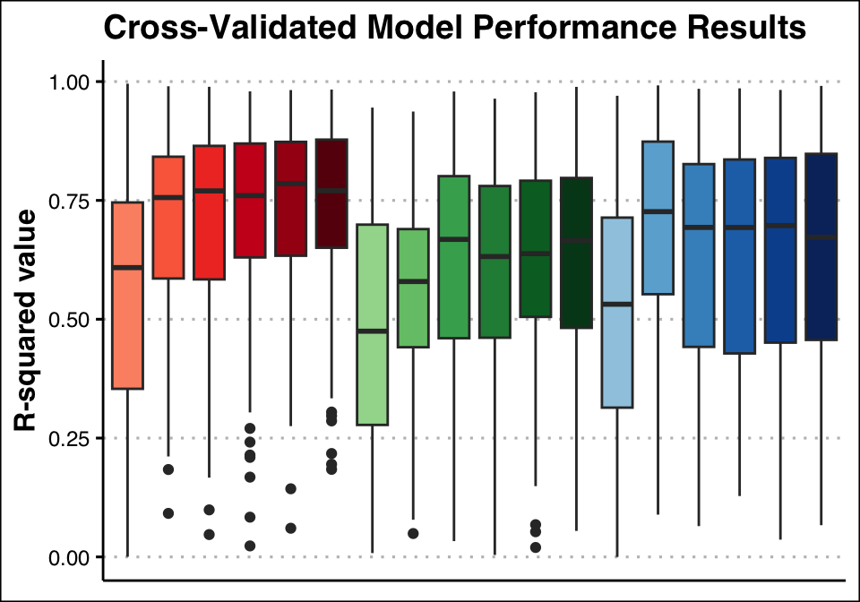
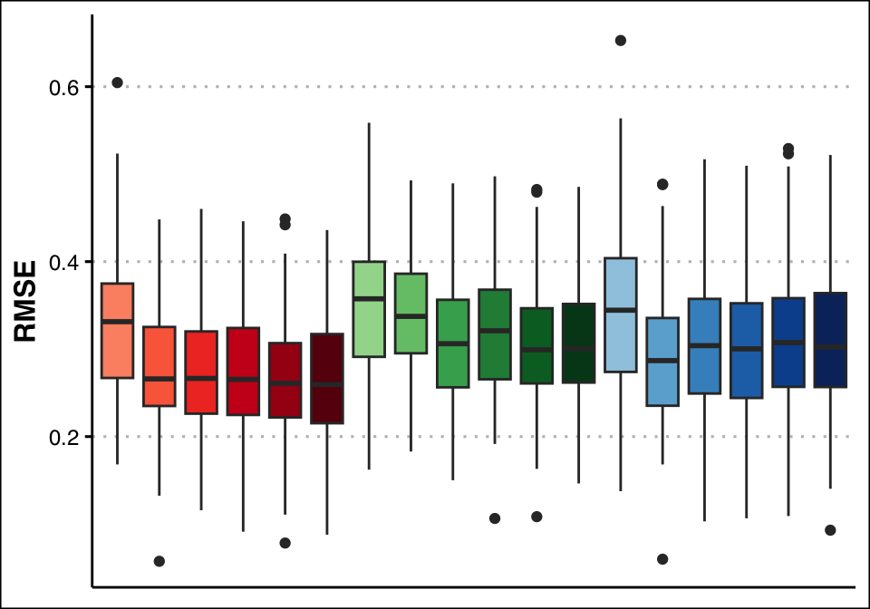
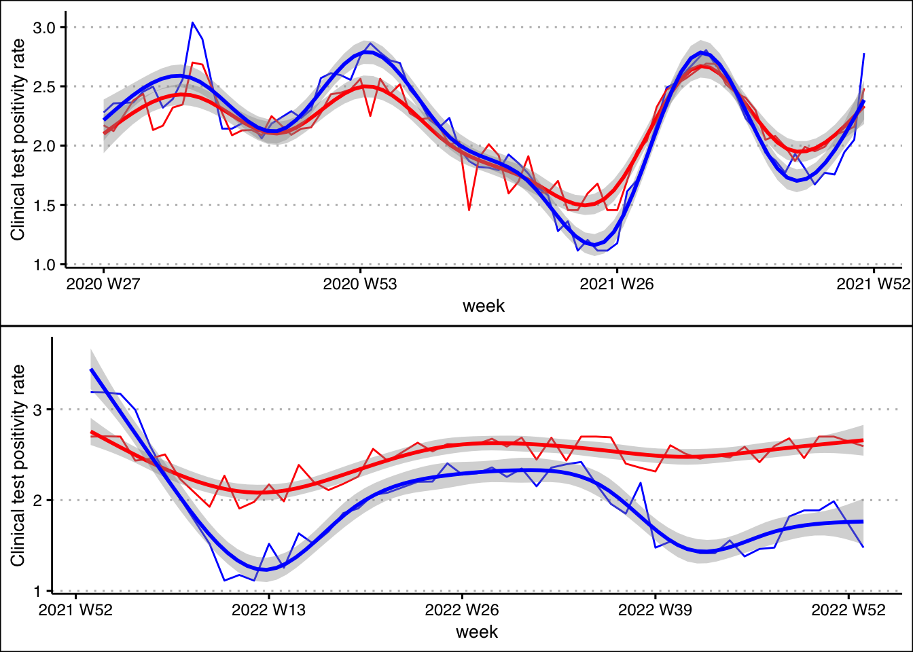

Evaluating trade offs in wastewater surveillance of SARS-CoV-2 for predicting clinical incidence rates
Abstract
SARS-CoV-2 wastewater-based detection methods are used as indicators of COVID-19 prevalence and can serve as a tool in understanding transmission dynamics as infections are less often reported now than initially during the pandemic. While wastewater-based surveillance can be less resource demanding and time consuming than clinical surveillance, more work could be done to reduce reporting delays. Previous work has been done to explore the most robust and accurate wastewater-based models for predicting incidence of COVID-19, but work has not yet been done to understand how simplified processing methods could impact model performance. This study aims to utilize a machine learning framework to compare wastewater metrics, viral load and detection frequency, for their power to predict COVID-19 incidence, as well as evaluate the impact of simplified processing methods on model performance. Composite samples were collected between June 2020 and January 2023 from three treatment facilities in Athens-Clarke County, Georgia (USA). Six replicate nucleic acid extractions were performed and SARS-CoV-2 specific RT-qPCR assays were used to amplify targets on the N-gene (N1 and N2). Quantification cycle (Cq) values and wastewater flow data were used to estimate daily viral loads. Assay detection frequency was determined by totaling the positive reactions for each date. COVID-19 clinical data were obtained from the Georgia DPH. Using a Random Forest framework, viral load and detection frequency were compared for their ability to accurately predict clinical test positivity rates from June 2020 to January 2021. Subsequently, extraction replicates were removed one at a time and model performances were assessed. No large differences were found in performance metrics between viral load and detection frequency models, and increasing biological replicates did not improve outcomes. Researchers interested in doing wastewater surveillance may want consider how to best implement detection methods based on resource availability and research goals.
Introduction
Background
Early in the pandemic, wastewater-based epidemiology (WBE) was identified as a promising method for detecting and quantifying SARS-CoV-2 at population levels. SARS-CoV-2 viral particles can shed from a person during and after infection (Wu et al., 2020) and can enter wastewater streams when an infected individual uses the toilet, showers, or washes their hands. Viral particles in wastewater are able to be detected via Reverse Transcriptase Quantitative Polymerase Chain Reaction (RT-qPCR) by amplification of universally-conserved gene targets (Ahmed et al., 2020). Previous studies have shown that viral load quantification and detection frequency in wastewater samples correlate with COVID-19 clinical case data, especially when reporting efforts are strong (Lott et al., 2023). As COVID-19 shifts from pandemic to endemic and reporting is no longer robust, WBE methods have the potential to fill gaps left by clinical data.
Wastewater-based surveillance for public health offers a number of advantages relative to clinical surveillance. To get clinical data, an infected individual must have access to and decide to be tested in a clinical setting and data sharing must be approved by an institutional review board. Alternatively, WBE is unbiased by healthcare seeking behavior and is anonymous by nature, allowing for more infections to be captured with less concerns over privacy. WBE can also be less resource demanding as one wastewater sample can potentially capture numerous infections at once, whereas a greater magnitude of clinical sampling is needed to capture a comparable amount information. Limited sampling necessity combined with real-time detection methods are some advantages of WBE that could make informing public health faster and more accessible.
While WBE does offer considerable advantages to traditional surveillance, it is important to look for ways to improve access and turnaround time by evaluating trade offs between data robustness and methodology simplicity. RT-qPCR is the most common method used to detect and quantify SARS-CoV-2 particles in wastewater, but this requires access to specialized equipment that may not be available to all research groups. Meanwhile, conventional PCR methods may be more widely accessible, but data is limited to observance of presence/absence because quantification is not possible. While conventional methods may lack the robustness that RT-qPCR offers, little work has actually been done to examine the relationship between presence/absence data and infection incidence (Lott et al., 2023). Most groups conducting wastewater surveillance also utilize multiple replicates per sample to obtain more accurate results, however, this can drastically increase the processing time. Previous work suggests that replicate samples can minimize errors associated with viral wastewater detection (Ahmed et al., 2022), but work has yet to examine how reducing replicates impacts case incidence predictions. Understanding these trade offs will be necessary for expanding global engagement with wastewater-based surveillance methods, not only for COVID-19 but other concerning pathogens as well.
Aims
This work aims to understand the trade off between wastewater data robustness and predictive power through a series of feature selections, evaluated within a Random Forest (RF) framework. To do this, RF models will be trained on either a) viral load quantification or b) detection frequency of SARS-CoV-2 particles in wastewater. Subsequently for each feature, replicates will be dropped one at a time at random (n = 6..1). Each feature selection will be used in a RF model to predict clinical case positivity rates (positive tests/total test administered) and model performance metrics will be compared.
Materials and Methods
Data sources
Wastewater surveillance data
Sample collection for wastewater surveillance began June 30, 2020 and occurred twice weekly (excluding major holidays) through December 21, 2022. 24-hour composite raw wastewater influent samples were collected twice-weekly from three treatment facilities in Athens-Clarke County and stored at 4°C until ready for extraction. 280 𝜇L of wastewater was aliquoted in replicate (n=6) and direct RNA extraction (Zymo Research, R2042) was performed on the same day as sample collection. Each extraction replicate was reverse transcribed and amplified using RT-qPCR and a SARS-CoV-2 specific primer-probe panel (IDT, 10006713), done in technical replicates (n=3). As part of the qPCR panel, two gene targets on the N-gene of the SARS-CoV-2 genome were used for amplification. The N1 and N2 gene targets are conserved across variants and act as universal detectors (cite). Quantification cycle (Cq) values were calculated for each reaction, which were then used to estimate SARS-CoV-2 viral load.
Wastewater treatment plant flow data
Wastewater influent flow data, including millions of gallons per day (MGD) and total suspended solids (TSS), were collected for each corresponding sampling date. For each treatment plant and collection date, MGD and TSS was shared by plant operators directly with our team and compiled throughout the study period.
Clinical case data
COVID-19 clinical data were obtained from the Georgia Department of Public Health website (“COVID-19 Status Report,” n.d.) which includes COVID-19 reported clinical case data for the state of Georgia. Reported case and testing data were downloaded from the COVID-19 Status Report Page in January 2023.
Data wrangling and pre-processing
Sub-setting replicates
To simulate simplified wastewater surveillance processing, biological replicates were randomly selected from the original dataset at n = 1, 2, 3, 4, 5, & 6. Six biological replicates were originally utilized during surveillance, so n = 6 is equivalent to the original data generated.
Calculating wastewater detection frequency
Detection frequency was determined for sample and gene target by calculating the number of positive detections per week out of the total number of assays performed for each facility and gene target. This includes all biological and technical replicates.
Calculating clinical test positivity rate
Georgia DPH data corresponding to the wastewater surveillance period were selected. COVID-19 clinical test positivity rate was determined by dividing total positive tests per week by total tests administered per week.
Model training
Two random forest model workflows were generated using Tidymodels packages in R. Model predictors included either viral load estimates or qPCR detection frequency, with clinical test positivity rate as the outcome. Each model was trained on all six subsets. Data from 2020 and 2021 were selected to train models on due to stronger clinical reporting at this time.
Evaluating model performance
To evaluate and validate model performance, V-fold cross-validations were performed for each set of training data (V = 2, repeats = 20). Mean R-square value (R^2) and root mean square error (RMSE) were evaluated as metrics of performance.
Results
Data distribution
Viral load estimate distributions for each treatment facility and target were right-skewed, as the mean was higher than the median across each dataset (Figure 1). This is likely because a majority of reactions throughout the study had low to no detection.
Detection frequency had similarly skewed distributions, which is to be expected as these variables are strongly correlated (Figure 2). However, distributions from Plant B and C also exhibited higher counts in high detection rates. This could because once wastewater viral particles become concentrated past a certain point, detection frequency reaches 100% and cannot exceed that limit. If frequency was able to exceed 100%, it is likely that some distributions would look more like those of the corresponding viral load.

Clinical case positivity rate also had a right-skewed distribution, as most weeks had lower positive rates (median, 5.7%) compared to the average (8.2%) (Figure 3).

Cross-validated model performance metrics
Mean R^2 ranged 0.53-0.60 and RMSE ranged 0.045-0.049 for all model fits. Significance tests were not ran, but it is likely that no models significantly outperformed others. However, models with the highest R2 were the detection frequency models with one biological replicate (0.60) and four biological replicates (0.57) and models with the lowest R2 were the viral load models with six, five, and three replicates (0.53) (Table 1, Figures 1-2).
| Model fit | Mean RSQ | Mean RMSE |
|---|---|---|
| VL_6 | 0.53 (SD 0.097) | 0.049 (SD 0.008) |
| VL_5 | 0.53 (SD 0.097) | 0.049 (SD 0.008) |
| VL_4 | 0.56 (SD 0.101) | 0.047 (SD 0.009) |
| VL_3 | 0.53 (SD 0.091) | 0.049 (SD 0.008) |
| VL_2 | 0.57 (SD 0.096) | 0.047 (SD 0.009) |
| VL_1 | 0.59 (SD 0.091) | 0.045 (SD 0.009) |
| DF_6 | 0.56 (SD 0.080) | 0.047 (SD 0.007) |
| DF_5 | 0.56 (SD 0.076) | 0.048 (SD 0.007) |
| DF_4 | 0.58 (SD 0.083) | 0.047 (SD 0.007) |
| DF_3 | 0.54 (SD 0.080) | 0.048 (SD 0.007) |
| DF_2 | 0.57 (SD 0.084) | 0.047 (SD 0.007) |
| DF_1 | 0.60 (SD 0.081) | 0.045 (SD 0.008) |
Table 1. Mean V-fold cross validated R-square and root mean square error, plus standard deviation, for each model fit.


The “best” model was used to predict clinical test positivity rates in data from 2022, predicting test positivity reasonable well (R^2 0.60). However, rates were slightly under-predicted in the summer months and slightly over-predicted late in the year (Figure 6b).

Discussion
While feature selection did not have strong impacts on model performance, all models performed reasonably well and were able to make accurate predictions in data withheld from model training, and cross-validated results were promising. Viral load and detection frequency models performed comparably to one another, and meaningful difference in performances were not observed when biological replicates were removed. These results indicate that regardless of detection methodology, wastewater surveillance techniques can make reasonable predictions about case incidence when applied in machine learning analysis frameworks. This may point to the need for researchers working on wastewater pathogen detection to consider which approach is most appropriate for their workflows. These results may also encourage more researchers to explore wastewater surveillance techniques, without the need to invest in Real-Time equipment or process an increased number of samples.
Conclusion
The COVID-19 pandemic created an opportunity for the scientific community to realize the potential of wastewater-based epidemiology to track the spread of infectious diseases. It is well-known that SARS-CoV-2 viral particles can be detected in wastewater influent samples and that levels correlate with case incidence, but more work is needed to explore the utility of machine learning algorithms to make predictions about outbreaks from wastewater data. Wastewater surveillance efforts have popped up globally since the start of the pandemic, but common methods require specialized molecular equipment for quantifying wastewater viral load. Detection is possible with more widely available technology like conventional PCR, but results are limited to detection frequency. This study aimed to understand how both wastewater viral load and detection frequency of SARS-CoV-2 gene targets handled COVID-19 case incidence predictions. Biological replicates in each sample were also subset and used to train random forest models in order to determine if more replicates are necessary or not. Cross-validated results suggest that viral load did not outperform detection frequency models, and increased biological replicates did not improve model performance. However, all models predicted reported clinical test positivity rates reasonably well. Researchers interested in wastewater surveillance who may not want to initially invest in quantitative equipment could consider utilizing methods such as loop-mediated isothermal amplification (LAMP) or conventional PCR techniques to generate presence/absence data instead of needing to quantify viral targets. Researchers with the primary goal of generating results for timely reporting purposes should consider how processing times could be reduced, potentially by reducing biological replicates.
Sources cited
Wu, Y., Guo, C., Tang, L., Hong, Z., Zhou, J., Dong, X., Yin, H., Xiao, Q., Tang, Y., Qu, X., Kuang, L., Fang, X., Mishra, N., Lu, J., Shan, H., Jiang, G., & Huang, X. (2020). Prolonged presence of SARS-CoV-2 viral RNA in faecal samples. The Lancet Gastroenterology & Hepatology, 5(5), 434–435. https://doi.org/10.1016/S2468-1253(20)30083-2
Ahmed, W., Angel, N., Edson, J., Bibby, K., Bivins, A., O’Brien, J. W., Choi, P. M., Kitajima, M., Simpson, S. L., Li, J., Tscharke, B., Verhagen, R., Smith, W. J. M., Zaugg, J., Dierens, L., Hugenholtz, P., Thomas, K. V., & Mueller, J. F. (2020). First confirmed detection of SARS-CoV-2 in untreated wastewater in Australia: A proof of concept for the wastewater surveillance of COVID-19 in the community. Science of The Total Environment, 728, 138764. https://doi.org/10.1016/j.scitotenv.2020.138764
Lott, M. E. J., Norfolk, W. A., Dailey, C. A., Foley, A. M., Melendez-Declet, C., Robertson, M. J., Rathbun, S. L., & Lipp, E. K. (2023). Direct wastewater extraction as a simple and effective method for SARS-CoV-2 surveillance and COVID-19 community-level monitoring. FEMS Microbes, 4, xtad004. https://doi.org/10.1093/femsmc/xtad004
Ahmed, W., Simpson, S. L., Bertsch, P. M., Bibby, K., Bivins, A., Blackall, L. L., Bofill-Mas, S., Bosch, A., Brandão, J., Choi, P. M., Ciesielski, M., Donner, E., D’Souza, N., Farnleitner, A. H., Gerrity, D., Gonzalez, R., Griffith, J. F., Gyawali, P., Haas, C. N., … Shanks, O. C. (2022). Minimizing errors in RT-PCR detection and quantification of SARS-CoV-2 RNA for wastewater surveillance. Science of The Total Environment, 805, 149877. https://doi.org/10.1016/j.scitotenv.2021.149877